1020D14 front crank shaft oil seal cover - r + r and replace seals for versions with oil pump on crank shaft, timing side
- Path
- Procedures > 10 ENGINE > 1020 CRANKCASE SUMP AND COVERS > 1020D oil seals on crank shaft > 1020D14 front crank shaft oil seal cover - r + r and replace seals for versions with oil pump on crank shaft, timing side
- Kind
- repair procedure (removal / refitting; the operation number is the code)
- Applies to
- engines: 1.9 JTD 8V, 1.9 JTD 16V; all production periods
- Interactive page
- https://sloeber94.github.io/elrnDB-a147/en/#/3025003
Applies to: engines: 1.9 JTD 8V; all production periods
 Removing
Removing
 Refitting
Refitting1016A10 sound-proofing cover - r + r
1008C10 power unit upper reaction link r r
1008C14 engine link bracket - r r
1060G80 ds electric injection control unit - r r
7055B54 under-engine guard - r r
7055B64 Engine compartment DUST shield in front wheel arch (one), left or right - R.R.
1092G10 single engine belt r r
1092A10 Crankshaft services PULLEY - R.R.
1032B10 toothed timing belt - r + r for timing adjustment or replacement
1076B50 exhaust pipe attachment to engine - r + r
2710A35 intermediate drive shaft mount - r r
1020A20 crank case oil sump - r + r clean seals for sealant application
1. Undo the bolt (1a) and remove the fixed timing belt tensioner (1b).
2. Undo the fixing bolts (2a) and remove the engine coolant reservoir (2b).
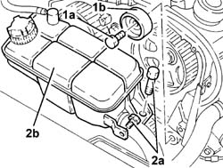
Applies to: engines: 1.9 JTD 8V; all production periods
1. Fit the power unit mounting bracket (1a) using the bolt (1b) securing the pressure pump mounting the inlet chamber.
2. Disconnect the air inlet hose leading from the cold intake from the throttle body connector.
3. Fit the tool (3a), complete with mountings (3b) and support the power unit attaching the rod (3c) for the tool to the bracket fitted previously.
 | Name | Country |
|---|---|---|
3a | Crossmember | 1.820.581.000 |
| Name | Country |
|---|---|---|
3b | Support mountings | 1.870.650.000 |
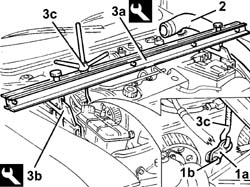
Applies to: engines: 1.9 JTD 8V; all production periods
1. Undo the bolts (1a) and remove the moving timing belt tensioner (1b).
2. Undo the bolts (2a) and remove the power assisted steering pump pulley (2b).
3. Undo the fixing bolts (3a) and move the power steering pump (3b) backwards, releasing it from the support.
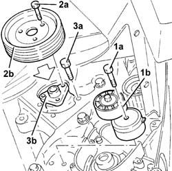
Applies to: engines: 1.9 JTD 8V; all production periods
1. Remove the cartridge oil filter from the heat exchanger.
2. Remove the connector securing the heat exchanger to the oil pump front cover.
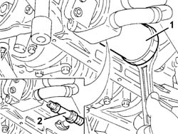
Applies to: engines: 1.9 JTD 8V; all production periods
1. Place a hydraulic jack under the rigid power unit support, timing side.
2. Undo the bolts (2a) and remove the timing side power unit rigid rear support (2b).
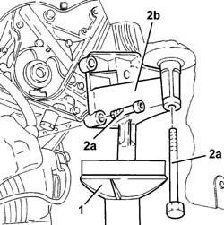
Applies to: engines: 1.9 JTD 8V; all production periods
1. Undo the bolts (1a) and remove the power assisted steering pump and alternator mounting (1b).
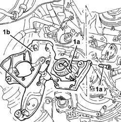
Applies to: engines: 1.9 JTD 8V; all production periods
1. Undo the bolts (1a) and remove the crankshaft front cover (1b) complete with inlet (1c).
Recover the underlying gasket.
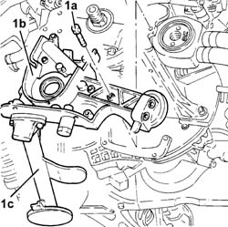
Applies to: engines: 1.9 JTD 8V; all production periods
Refitting
RemovingFit a new gasket.
Fit the front oil seal cover together with the engine oil intake housing.
Tighten the retaining bolts to torque.
 | Fastening | Component | Ø | Value (daNm) |
|---|---|---|---|---|
- | Bolt | CRANKSHAFT FRONT COVER | M6 | 0.8 - 1.0 |
Fit the power assisted steering pump and alternator mounting and fix it using the bolts.
| Fastening | Component | Ø | Value (daNm) |
|---|---|---|---|---|
- | Bolt | POWER STEERING PUMP SUPPORT/BRACKET | M8 | 2.5 |
| Fastening | Component | Ø | Value (daNm) |
|---|---|---|---|---|
- | Bolt | POWER STEERING PUMP SUPPORT/BRACKET | M10 | 5 |
Fit the power unit timing side support.
Tighten the bolts securing the mount to the engine and block to the specified torque.
| Fastening | Component | Ø | Value (daNm) |
|---|---|---|---|---|
- | Bolt | ENGINE MOUNT TIMING SIDE | M12 | 4.2 - 5.2 |
| Fastening | Component | Ø | Value (daNm) |
|---|---|---|---|---|
- | Bolt | ENGINE MOUNT TIMING SIDE | M10 | 4.2 - 5.2 |
Remove the hydraulic lift positioned under the oil sump.
Fit the heat exchanger to the front oil pump cover and tighten the retaining connector to torque.
| Fastening | Component | Ø | Value (daNm) |
|---|---|---|---|---|
- | Connector | OIL COOLING RADIATOR | M20 | 6 |
Hand-tighten the oil filter cartridge after lubricating the gasket.
Fit the power steering pump in its seat and tighten the bolts to torque.
| Fastening | Component | Ø | Value (daNm) |
|---|---|---|---|---|
- | Bolt | POWER STEERING PUMP | M8 | 1.9 - 2.3 |
Fit the power steering pump pulley and tighting the fixing bolts to torque.
| Fastening | Component | Ø | Value (daNm) |
|---|---|---|---|---|
- | Bolt | POWER STEERING PUMP DRIVE PULLEY | M6 | 0.6 - 0.8 |
Tighten the timing drive belt mobile tensioner fixing bolt.
| Fastening | Component | Ø | Value (daNm) |
|---|---|---|---|---|
- | Bolt | SINGLE SERVICES MOBILE BELT TENSIONER | M10 | 4.2 ÷ 5.2 |
Remove the tools used for supporting the power unit.
| Name | Country |
|---|---|---|
- | Crossmember | 1.820.581.000 |
| Name | Country |
|---|---|---|
- | Support mountings | 1.870.650.000 |
Connect the cold air intake pipe to the intake manifold.
Fit the coolant reservoir and secure it using the bolts.
Fit the timing belt fixed tensioner and fix it using the bolts.
1020A20 crank case oil sump - r + r clean seals for sealant application
2710A35 intermediate drive shaft mount - r r
1076B50 exhaust pipe attachment to engine - r + r
1032B10 toothed timing belt - r + r for timing adjustment or replacement
1092A10 Crankshaft services PULLEY - R.R.
1092G10 single engine belt r r
7055B64 Engine compartment DUST shield in front wheel arch (one), left or right - R.R.
7055B54 under-engine guard - r r
1060G80 ds electric injection control unit - r r
1008C14 engine link bracket - r r
Applies to: engines: 1.9 JTD 16V; all production periods
Removing
RefittingPosition the vehicle on the ramp.
Proceed with removal 7025A12 Engine front sound insulation COVER - R.R. .
Proceed with removal 7025A14 Bonnet LID - R.R. .
Proceed with removal 1016A10 sound-proofing cover - r + r .
Ensure that the ignition key is in the OFF position, then disconnect the negative battery terminal (-).
 | Name | Connector |
|---|---|---|
- | Battery |
Proceed with removal 1008C10 power unit upper reaction link r r .
Proceed with removal 1060G80 ds electric injection control unit - r r .
Proceed with removal 4450B04 right front wheel r r .
Proceed with removal 7055B54 under-engine guard - r r .
Proceed with removal 7055B91 Right front WHEEL ARCH LINER - R.R. .
Proceed with removal 1092G10 single engine belt r r .
Proceed with removal 1092A10 Crankshaft services PULLEY - R.R. .
Proceed with removal 1092G20 engine component single belt fixed tensioner - one - r + r .
Proceed with removal 1032D12 timing system protective cover(s) - r + r .
Proceed with removal 1032B10 toothed timing belt - r + r for timing adjustment or replacement .
Proceed with removal 1032B44 toothed drive pulley - r + r with timing belt removed .
Proceed with removal 1084A16 oil dip stick pipe - r r .
Proceed with removal 1020A20 crank case oil sump - r + r clean seals for sealant application .
1. Undo the bolt (1a) and remove the fixed timing belt tensioner (1b).
2. Undo the bolts (2a) and move the engine cooling reservoir (2b) sideways.
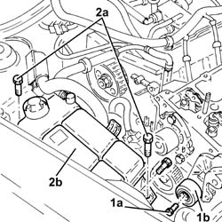
Applies to: engines: 1.9 JTD 16V; all production periods
1. Fit a suitable engine mounting bracket (1a) using the bolt (1b) fixing the pressure pump support to the camshaft housing.
2. Fit the tool (2a), complete with mountings (2b) and support the power unit attaching the rod (2c) for the tool to the bracket fitted previously.
| Name | Country |
|---|---|---|
2a | Crossmember | 1.820.581.000 |
| Name | Country |
|---|---|---|
2b | Support mountings | 1.870.650.000 |
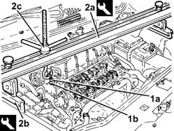
Applies to: engines: 1.9 JTD 16V; all production periods
1. Undo the bolt (1a) and remove the single drive belt tensioner (1b).
2. Undo the bolts (2a) and remove the power assisted steering pump drive pulley (2b).
3. Undo the bolts (3a) and move the power assisted steering pump (3b) backwards in relation to the support.
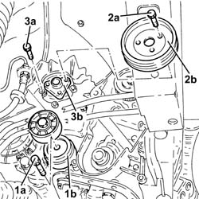
Applies to: engines: 1.9 JTD 16V; all production periods
1. Undo the bolt (1a) and disconnect the cooling radiator engine oil supply pipe (1b), engine oil filter mounting side.
2. Undo the bolt (2a) and disconnect the cooling radiator engine oil return pipe (2b), engine oil filter mounting side.
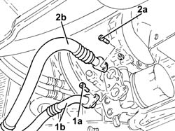
Applies to: engines: 1.9 JTD 16V; all production periods
1. Using a suitable tool, undo and remove the engine oil filter cartridge.
2. Undo the connector (2a) and remove the engine oil filter mounting (2b) with thermostatic valve incorporated.
Remove the gasket.
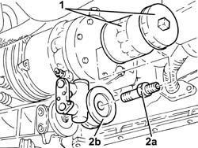
Applies to: engines: 1.9 JTD 16V; all production periods
Position a hydraulic jack under the engine.
1. Undo the bolt securing timing side rigid engine support to the flexible mounting.
2. Undo the bolts (2a) and remove the timing side rigid engine support (2b).
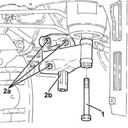
Applies to: engines: 1.9 JTD 16V; all production periods
1. Unscrew the bolts (1a) and remove the support (1b) complete with mobile timing belt tensioner (1c).
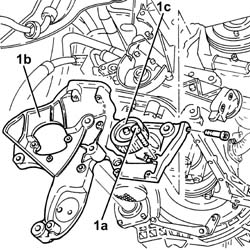
Applies to: engines: 1.9 JTD 16V; all production periods
1. Undo the bolts (1a) and remove the crankshaft front cover (1b) complete with oil seal (1c) and intake (1d).
Keep the gasket.
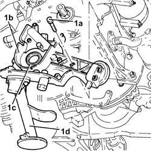
Applies to: engines: 1.9 JTD 16V; all production periods
Refitting
RemovingPlace the gasket back in its housing.
1. Place the crankshaft front cover (1a) complete with oil seal (1b) and intake (1c) back in its housing and secure it tightening the bolts (1d) to the recommended torque.
| Fastening | Component | Ø | Value (daNm) |
|---|---|---|---|---|
1d | - | - | - | - |
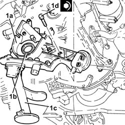
Applies to: engines: 1.9 JTD 16V; all production periods
1. Place the support (1a), complete with timing moving tensioner (1b), back in its housing and secure it using the bolts (1c).
| Fastening | Component | Ø | Value (daNm) |
|---|---|---|---|---|
1c | - | - | - | - |
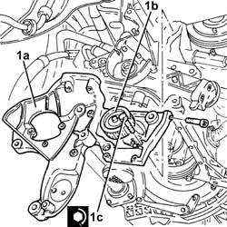
Applies to: engines: 1.9 JTD 16V; all production periods
1. Refit the timing side rigid engine support and secure it tightening the bolts (1b) to the recommended torque.
| Fastening | Component | Ø | Value (daNm) |
|---|---|---|---|---|
1b | - | - | - | - |
2. Tighten the bolt securing timing side rigid engine support to the flexible mounting to the recommended torque.
| Fastening | Component | Ø | Value (daNm) |
|---|---|---|---|---|
2 | Bolt | ENGINE MOUNT TIMING SIDE | M12 | (Flexible mounting side) 7.9 ÷ 9.7 |
Remove the hydraulic jack from under the engine.
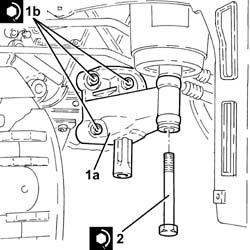
Applies to: engines: 1.9 JTD 16V; all production periods
1. Place the engine oil filter (1a) complete with gasket back in its housing and fasten it tightening the connector (1b) to the recommended torque.
| Fastening | Component | Ø | Value (daNm) |
|---|---|---|---|---|
1b | - | - | - | - |
2. Lubricate the gasket with engine oil and fit the engine oil filter, tightening fully by hand.
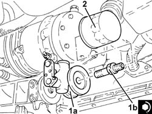
Applies to: engines: 1.9 JTD 16V; all production periods
Connect the engine oil return pipe from the cooling radiator, engine oil filter mounting side, and tighten the bolt.
Connect the engine oil supply pipe to the cooling radiator, engine oil filter mounting side, and tighten the bolt
1. Refit the power steering pump (1a) in its seating and tighten its bolts (1b) to the specified torque.
| Fastening | Component | Ø | Value (daNm) |
|---|---|---|---|---|
1b | - | - | - | - |
2. Place the power assisted steering pump drive pulley (2a) back in its housing and secure it by tightening the bolts (2b) to the recommended torque.
| Fastening | Component | Ø | Value (daNm) |
|---|---|---|---|---|
2b | - | - | - | - |
3. Place the engine components single drive belt moving tensioner (3a) back in its housing and fix it tightening the bolt (3b) to the recommended torque.
| Fastening | Component | Ø | Value (daNm) |
|---|---|---|---|---|
3b | - | - | - | - |
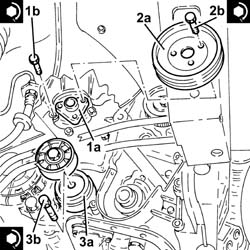
Applies to: engines: 1.9 JTD 16V; all production periods
Remove the safety tools used for supporting the power unit.
| Name | Country |
|---|---|---|
- | Crossmember | 1.820.851.000 |
| Name | Country |
|---|---|---|
- | Support mountings | 1.870.650.000 |
Refit the coolant reservoir in its seating and secure with its bolt.
Fit the fixed timing belt tensioner and secure by tightening the bolt to the recommended torque.
| Fastening | Component | Ø | Value (daNm) |
|---|---|---|---|---|
- | - | - | - | - |
Proceed with refitting 1020A20 crank case oil sump - r + r clean seals for sealant application .
Proceed with refitting 1084A16 oil dip stick pipe - r r .
Proceed with refitting 1032B44 toothed drive pulley - r + r with timing belt removed .
Proceed with refitting 1032B10 toothed timing belt - r + r for timing adjustment or replacement .
Proceed with refitting 1032D12 timing system protective cover(s) - r + r .
Proceed with refitting 1092G20 engine component single belt fixed tensioner - one - r + r .
Proceed with refitting 1092A10 Crankshaft services PULLEY - R.R. .
Proceed with refitting 1092G10 single engine belt r r .
Proceed with refitting 7055B91 Right front WHEEL ARCH LINER - R.R. .
Proceed with refitting 7055B54 under-engine guard - r r .
Proceed with refitting 4450B04 right front wheel r r .
Proceed with refitting 1060G80 ds electric injection control unit - r r .
Proceed with refitting 1008C10 power unit upper reaction link r r .
Connect the negative (-) battery terminal.
Refill the engine oil lubrication system 0010T11 engine oil check level and top up .
Proceed with refitting 1016A10 sound-proofing cover - r + r .
Proceed with refitting 7025A14 Bonnet LID - R.R. .
Proceed with refitting 7025A12 Engine front sound insulation COVER - R.R. .
Remove the car from the ramps.
Topics linked from this page (22)
- 0010T11 engine oil check level and top up
- 1008C10 power unit upper reaction link r r
- 1008C14 engine link bracket - r r
- 1016A10 sound-proofing cover - r + r
- 1020A20 crank case oil sump - r + r clean seals for sealant application
- 1032B10 toothed timing belt - r + r for timing adjustment or replacement
- 1032B44 toothed drive pulley - r + r with timing belt removed
- 1032D12 timing system protective cover(s) - r + r
- 1060G80 ds electric injection control unit - r r
- 1076B50 exhaust pipe attachment to engine - r + r
- 1084A16 oil dip stick pipe - r r
- 1092A10 Crankshaft services PULLEY - R.R.
- 1092G10 single engine belt r r
- 1092G20 engine component single belt fixed tensioner - one - r + r
- 2710A35 intermediate drive shaft mount - r r
- 4450B04 right front wheel r r
- 7025A12 Engine front sound insulation COVER - R.R.
- 7025A14 Bonnet LID - R.R.
- 7055B54 under-engine guard - r r
- 7055B64 Engine compartment DUST shield in front wheel arch (one), left or right - R.R.
- 7055B91 Right front WHEEL ARCH LINER - R.R.
- A1B Battery ( Connectors )